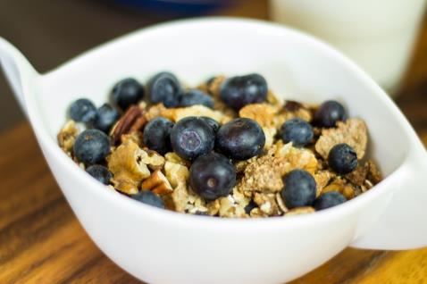

Barley Muesli with Nuts and Berries
Nutritional Facts (per serving)
Calories 318 | Total Fat 19.7g | Saturated Fat 2.1g | Carbohydrates 49.1g | Fibre 10.9g | Protein 8.3g
Serves: 4
Ingredients
- 100g barley flakes
- 100g bran flakes
- 50g almonds, roughly chopped
- 50g pecans, roughly chopped
- 50ml water
- 2 tbsp. agave nectar
- 1 tbsp. olive oil
- Milk and blueberries to garnish
Method
Step 1: Preheat the oven to Gas Mark 3 or 160°C.
Step 2: Crush the bran flakes up and mix with the barley flakes, almonds, and pecans in a big bowl.
Step 3: Combine the agave nectar with the olive oil and water in a small saucepan. Bring this mixture to the boil and boil for 3 minutes, stirring throughout.
Step 4: Then pour this syrup onto the muesli and mix well.
Step 5: Line a baking tray with baking parchment and pour the mixture onto it.
Step 6: Bake in the pre-heated oven for 15 minutes, stirring every 5 minutes.
Step 7: If the muesli seems to be drying out, remove it from the oven, or it will harden when it cools.
Step 8: Serve with a dash of milk and blueberries.